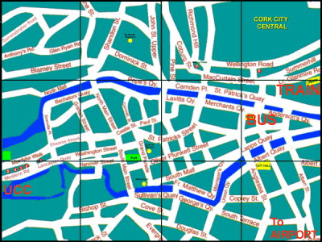

Cork is located at the mouth of the Lee River, capital of the South, but considered by Cork people to be the real Capital of Ireland. It is Ireland's third largest city. Tradition holds that the city was founded in the late 6th or early 7th century by St. Finbarr, who went there to kill the last dragon in Ireland and who built a monastery on the current south side of the city. The city is often called "Rebel Cork" because it was a center of the 19th century Fenian movement and played an active part in the Irish struggle for independence.
Cork is one of the most scenic counties in Ireland,with a wonderful combination of coastline, inlets, mountains and other scenic areas.
The county has it's own anthem,namely,'The banks of my own lovely Lee',or 'The Banks' as it is known locally.
Cork even has it's own stout called Murphys, very similar in appearance to Guinness!!
